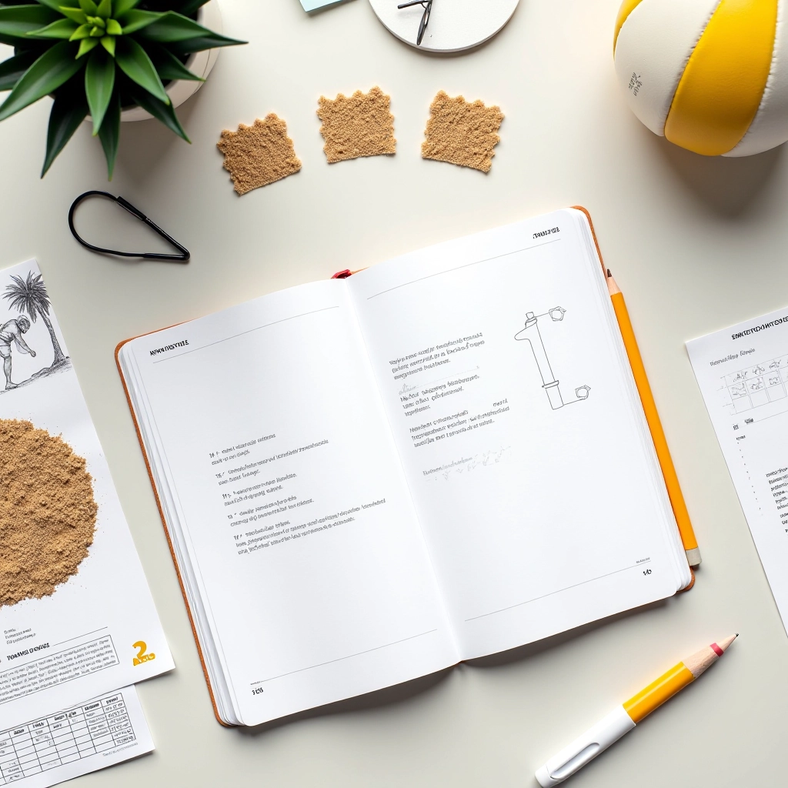
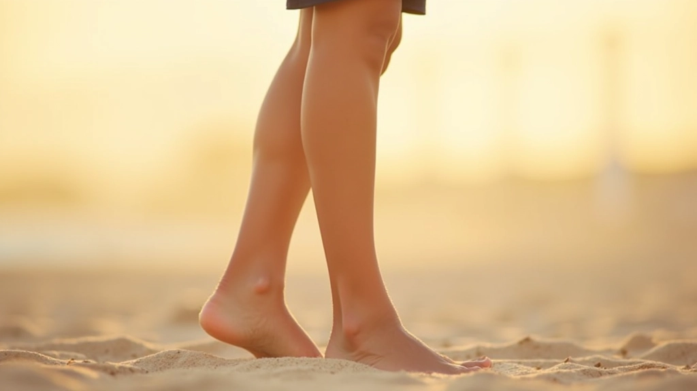
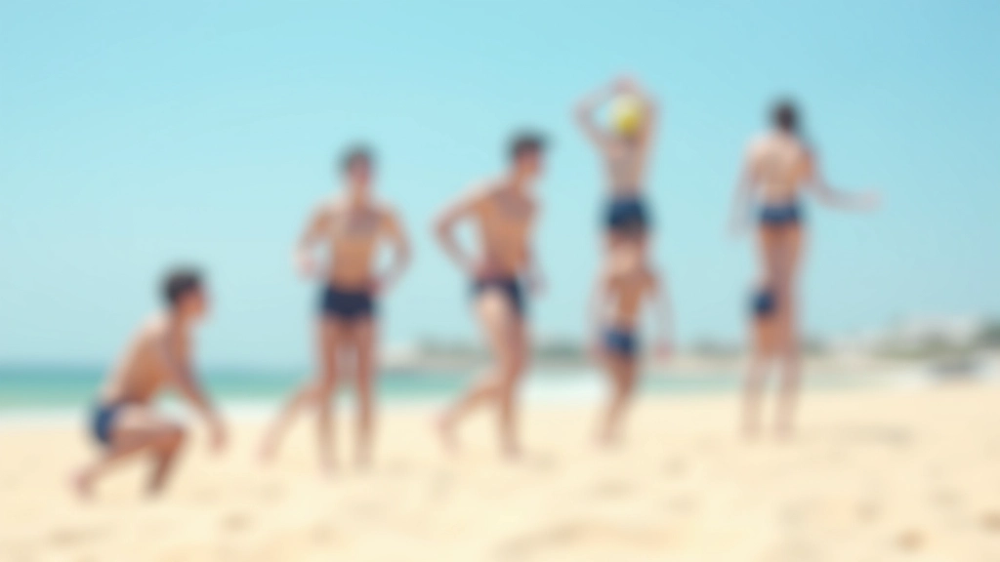
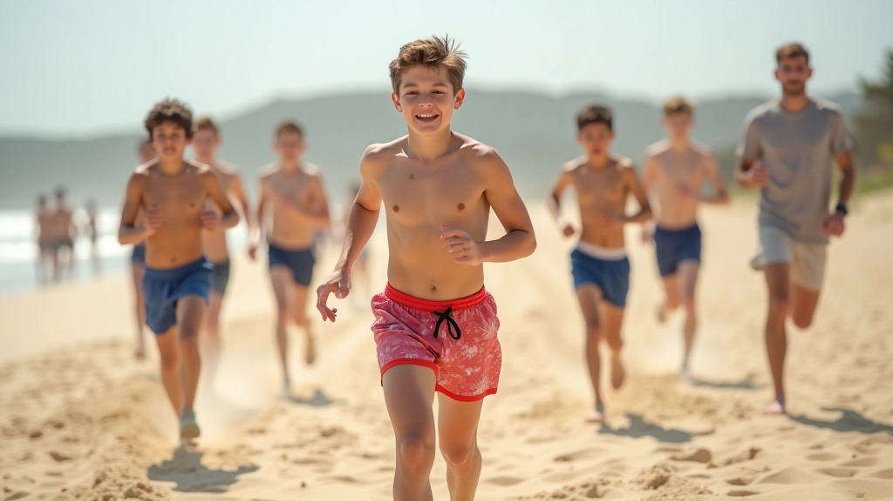
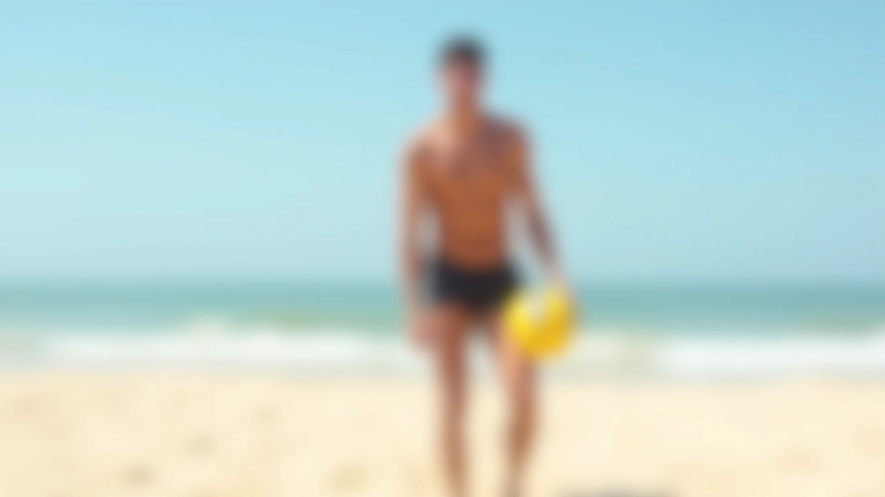
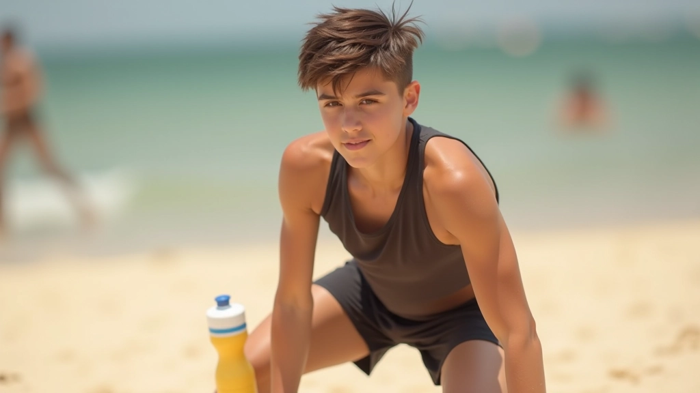
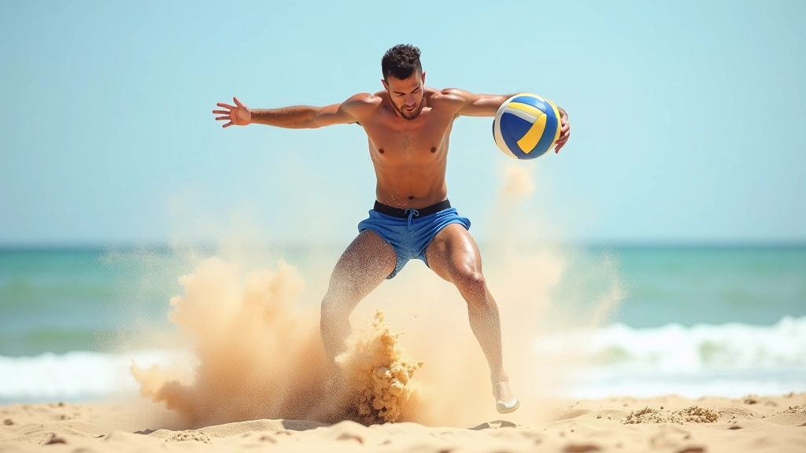

تمارين الحركة الجانبية السريعة
تعلم كيفية التحرك بسرعة جانبية على الرمل. تمارين متقدمة تحسن من ردود أفعالك وسرعتك الجانبية.
اقرأ المزيدتعرف على الطريقة الصحيحة للخطوة الأولى والحركات البطيئة التي تبني أساساً قوياً قبل الانتقال للسرعة. هذا الدليل سيساعدك على فهم أساسيات الحركة على الرمل بشكل صحيح وآمن.


بقلم
فريق المحتوى والمراجعة التحريري
متخصصون في توفير إرشادات عملية وموثوقة لتمارين حركة الرمل في الكرة الطائرة الشاطئية.
الخطوة الأولى هي أساس كل حركة تقوم بها على الرمل. كثير من المبتدئين يركضون مباشرة دون فهم الطريقة الصحيحة، وهذا يؤدي إلى إرهاق سريع وحركات غير فعالة. الحقيقة؟ نحن نبدأ بالبطء.
عندما تخطو على الرمل، يجب أن تركز على ثلاثة أشياء رئيسية: موضع القدم، توازن الجسم، والتحكم بسرعتك. الرمل يختلف عن الأرض الصلبة — فهو يمتص طاقتك بشكل أسرع، لذا الحركات الدقيقة والمتحكم فيها أفضل من الحركات العشوائية.


ضع قدمك الأمامية على الرمل بزاوية طفيفة للأمام. يجب أن تكون عريضة قليلاً أكثر من عرض الكتفين. هذا يعطيك استقراراً أفضل.
ثني الركبتين قليلاً — وليس الكثير. زاوية 30 درجة تقريباً كافية. هذا يقلل الضغط على الرمل ويمنحك توازناً أفضل عند الحركة.
ابدأ بخطوات صغيرة وبطيئة. تحرك للأمام ببطء لمدة 10-15 ثانية قبل محاولة أي سرعة. الرمل يحتاج وقتاً لكي تتأقلم معه.
لا تحتاج إلى أي معدات خاصة — فقط أنت والرمل. إليك التمارين التي ستساعدك على بناء أساس قوي:
المشي ببطء على الرمل يساعدك على التعود على المقاومة. ركز على خطوات متساوية وتنفس منتظم. هذا ليس سباقاً.
بعد المشي، جرب الجري ببطء. ابدأ بمسافة قصيرة جداً — 20 متراً فقط. استرح لمدة دقيقة، ثم كرر.
توقف فجأة ثم ابدأ من جديد. هذا يقوي عضلاتك ويحسن ردود أفعالك. جرب هذا 8-10 مرات.

الأخطاء الشائعة يمكن أن تؤخر تقدمك. إليك ما يجب تجنبه:
لا تسرع في البداية. معظم المبتدئين يحاولون الركض بسرعة من اليوم الأول. الرمل قاسي على الجسم، والسرعة المبكرة تؤدي إلى الإصابات. خذ وقتك — سيكون لديك الكثير من الفرص للتسريع لاحقاً.
تذكر أن الرمل ليس مثل الأرض العادية. يمتص طاقتك أسرع بـ 1.6 مرة تقريباً. هذا يعني أنك تحتاج إلى جهد أكبر للحصول على نفس النتيجة. لكن هذا يعني أيضاً أنك تبني عضلات أقوى بشكل أسرع.
أيضاً، ركز على التنفس. نفس منتظم يساعدك على البقاء مسترخياً وتجنب الإرهاق السريع. استنشق من الأنف، أخرج الهواء من الفم. ببطء وبثبات.


بعد أسبوعين من التدريب المنتظم، ستلاحظ فرقاً. لكن كيف تعرف أنك تتقدم بشكل صحيح؟
الآن بعد أن فهمت أساسيات الحركة على الرمل، يمكنك الانتقال إلى المرحلة التالية. لا تتسرع — بناء أساس قوي يستغرق وقتاً، وهذا طبيعي تماماً. كل لاعب محترف بدأ بنفس الخطوات التي تتعلمها الآن.
استمر في التدريب المنتظم، واستمع إلى جسدك، وتذكر أن التقدم ليس خطياً — بعض الأيام ستشعر بأنك أقوى، وبعضها ستشعر بالإرهاق. هذا جزء من العملية. الشيء المهم هو الاستمرار.
بعد حوالي 4-6 أسابيع من التدريب المنتظم، ستكون مستعداً لتعلم حركات أكثر تقدماً. لكن لا تتخطى هذه المرحلة الأساسية — إنها حقاً الأساس الذي سيبني عليه كل شيء آخر.
هذا الدليل مخصص للأغراض التعليمية والمعلوماتية فقط. إذا كنت تعاني من أي آلام أو إصابات سابقة، يرجى استشارة متخصص طبي قبل البدء بأي برنامج تدريبي. التدريب على الرمل قد يضع ضغطاً على المفاصل والعضلات، لذا من المهم التأكد من أنك في حالة صحية جيدة. استمع دائماً إلى جسدك وتوقف إذا شعرت بألم حاد.
استمر في تعلمك مع هذه الموارد الإضافية
تعلم كيفية التحرك بسرعة جانبية على الرمل. تمارين متقدمة تحسن من ردود أفعالك وسرعتك الجانبية.
اقرأ المزيد
استقرار أفضل، ردود فعل أسرع. اتقن أساسيات التوازن والاستعداد للحركات المقبلة.
اقرأ المزيد
بعد إتقان الأساسيات، انتقل إلى حركات متقدمة والقفزات العالية. تمارين احترافية لرفع مستواك.
اقرأ المزيد